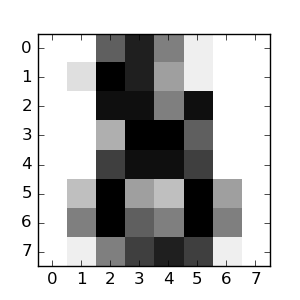

内容提要：
在这一节, 我们介绍scikit-learn中无处不在的 机器学习 这个词汇所指向的含义，并且展示一个简单的例子来说明
总的来说, 一个机器学习问题可以这样描述：给定n个样本数据， 设计某种算法使得机器能够自动的发现样本数据所隐含的某种规律或某个知识，然后利用发现的规律或知识去预测未知数据的某些属性。 如果每个样本不仅仅包含1个数，而是有多个维度的入口(multi-dimensional entry) (aka 多变量(multivariate) 数据), 则我们称这样的样本数据具有多个属性(attributes)或多个特征(features).
我们可以将学习问题划分为几个比较大的类别:
监督学习(supervised learning), 在监督学习中，每个样本数据都有一个(对应于单标签)或几个(对应于多标签)附加的属性用于定义该样本数据的所属类别，监督学习的目的就是预测未知数据的类别属性 (单击此处 转到 scikit-learn 的监督学习页面).监督学习问题又可分为两类:
- 分类(classification): 在分类问题中，样本集合属于两个或者更多的类，我们希望从已知类别标签的样本集合中学习某个规律或知识， 然后用学到的规律预测那些未知标签的样本到底属于那个类。分类问题的一个例子是手写字符的识别问题 ，目标是给每个输入向量分配一个代表离散类别的数字。 对分类的另一种认识是可以把它看作是监督学习的离散形式（连续形式在回归中更为常见），因为我们的数据属于数量有限的类别，这些类别标签往往是 离散的数字标号或字符串表示的名称。
- 回归(regression): 如果想要的输出由一个或多个连续变量组成，那么这样的监督学习任务就叫做回归。回归问题的一个例子是预测鲑鱼的长度依据其年龄与体重。
无监督学习(unsupervised learning), 训练数据由输入向量x的集合构成，而且每个输入向量x没有任何与之相关联的目标值。无监督学习的目标大致可分为三类： 一是发现总体数据当中相似数据所构成的所有组，这被叫做聚类分析； 二是确定数据集在他们的输入空间的分布规律，这被叫做密度估计； 三是以可视化为目标将原始高维数据投影到二维或三维空间。 (点击此处 跳转到Scikit-Learn 无监督学习页面).
训练集 和 测试集
机器学习的策略是在一些数据集上学习关于此数据集的属性或规律，然后将他们应用到新的数据集中。 这也是为什么在机器学习中我们常干的一件事是把手头的数据集分成两个集合来评估算法。用来让机器学习规律或知识 的那个集合被称做训练集，而用来测试机器的学习效果的那个数据集合被称为测试集。
scikit-learn 带有若干标准数据集, 比如 iris 和 digits 数据集用于分类， boston house prices dataset 用于回归.
下面我们启动Python解释器来加载iris 和 digits 数据集.
我们的标记约定是：
$ 代表 shell 标记，而 >>>
代表Pytnon解释器的标记:
$ python
>>> from sklearn import datasets
>>> iris = datasets.load_iris()
>>> digits = datasets.load_digits()
一个数据集dataset是一个像字典一样的对象，其中包含了所有数据以及关于数据信息的元数据。
数据被存放在.data 成员中,它是一个
n_samples, n_features的数组(array).
在监督学习问题中， 一个或更多的响应变量(response variables)被存储在.target 成员中。
更多关于不同数据集的细节信息可以在参考这里
dedicated section
.
例如, 在digits数据集中, digits.data
给出了可以被用于分类digits样本的特征向量集合。
>>> print(digits.data)
[[ 0. 0. 5. ..., 0. 0. 0.]
[ 0. 0. 0. ..., 10. 0. 0.]
[ 0. 0. 0. ..., 16. 9. 0.]
...,
[ 0. 0. 1. ..., 6. 0. 0.]
[ 0. 0. 2. ..., 12. 0. 0.]
[ 0. 0. 10. ..., 12. 1. 0.]]
而 digits.target 则给出了digit 数据集的
ground truth ：我们需要学习的关联到每一个digit图像上的数字：
>>> digits.target
array([0, 1, 2, ..., 8, 9, 8])
Shape of the data arrays
数据data通常都是一个二维数组, shape(n_samples, n_features),
尽管原始数据可能有不一样的shape. 在digits数据集中，每一个原始样本是一幅图像
具有 shape(8, 8) 而且
可以以如下的方式访问：
>>> digits.images[0]
array([[ 0., 0., 5., 13., 9., 1., 0., 0.],
[ 0., 0., 13., 15., 10., 15., 5., 0.],
[ 0., 3., 15., 2., 0., 11., 8., 0.],
[ 0., 4., 12., 0., 0., 8., 8., 0.],
[ 0., 5., 8., 0., 0., 9., 8., 0.],
[ 0., 4., 11., 0., 1., 12., 7., 0.],
[ 0., 2., 14., 5., 10., 12., 0., 0.],
[ 0., 0., 6., 13., 10., 0., 0., 0.]])
这个 简单的digits数据集的例子 为你展示了怎样从原始问题开始准备适用于scikit-learn计算的数据格式.
在digits dataset的案例中, 我们的任务是预测： 给定一张图像,判断它表示的是那个数字。对于从0到9这10个数字，每个数字 代表一个类，数据集为每个类提供了一定数量的训练样本。我们将在这些训练样本上拟合 (fit) 一个 estimator使它能够预测 (predict) 那些未知类别标签的数字样本图像所代表的数字。
在 scikit-learn 中, 用于分类的 estimator 是一个Python对象，它实现了两个方法：fit(X, y) 和
predict(T).
estimator的一个例子是类 sklearn.svm.SVC，该类
实现了 支持向量机分类器.
一个 estimator 的构造函数以该模型的参数作为构造函数参数。但是在以后的版本中，我们将把estimator看作是黑箱模型(black
box):
>>> from sklearn import svm
>>> clf = svm.SVC(gamma=0.001, C=100.)
选择模型参数
在这个例子中，我们手动设置gamma的值.
你可以自动寻找比较好的参数值通过使用参数优化工具，比如网格搜索(grid search)
和 交叉验证(cross validation)。
我们把 estimator 对象的实例clf叫做分类器.
该分类器实例现在必须拟合到模型上或者说从模型学习。 这可以通过将我们的训练集传递给拟合(fit) 方法.
我们将数据集中除了最后一个样本图像之外的其余所有图像作为训练集。我们使用Python语法 [:-1]选择此训练集,
这将会产生一个新数组，包含了digits.data数据中除最后一个样本外的所有样本。
>>> clf.fit(digits.data[:-1], digits.target[:-1])
SVC(C=100.0, cache_size=200, class_weight=None, coef0=0.0,
decision_function_shape=None, degree=3, gamma=0.001, kernel='rbf',
max_iter=-1, probability=False, random_state=None, shrinking=True,
tol=0.001, verbose=False)
现在你可以用训练好的分类器模型来预测一个新的样本(即分类器在训练阶段不曾见过的样本)的类别别标签。
让我们来预测digits数据集中最后一个图像样本代表的数字是多少吧！
>>> clf.predict(digits.data[-1:])
array([8])
对应的最后一个样本图像如下所示:
就像你看到的那样, 这是一个非常有挑战性的任务: 图像样本的分辨率低得可怜，你是否认同分类器的判断呢?
关于手写数字分类识别的一个完整案例可以在此处见到，你可以运行并学习之: 手写数字识别.
在 scikit-learn 中你可以保存一个训练好的模型通过使用Python的内建保持模型, 称之为 pickle:
>>> from sklearn import svm
>>> from sklearn import datasets
>>> clf = svm.SVC()
>>> iris = datasets.load_iris()
>>> X, y = iris.data, iris.target
>>> clf.fit(X, y)
SVC(C=1.0, cache_size=200, class_weight=None, coef0=0.0,
decision_function_shape=None, degree=3, gamma='auto', kernel='rbf',
max_iter=-1, probability=False, random_state=None, shrinking=True,
tol=0.001, verbose=False)
>>> import pickle
>>> s = pickle.dumps(clf)
>>> clf2 = pickle.loads(s)
>>> clf2.predict(X[0:1])
array([0])
>>> y[0]
0
在 scikit-learn的某些特殊情形下, 使用
joblib 代替 pickle (joblib.dump & joblib.load),
将更加有趣，joblib在大数据集上有更好的性能表现, 但是只能弄到硬盘上，无法弄成一个字符串:
>>> from sklearn.externals import joblib
>>> joblib.dump(clf, 'filename.pkl')
稍后你还可以把你的 pickled model 加载回来(有可能是另外的Python进程):
>>> clf = joblib.load('filename.pkl')
注意啦:
joblib.dump 的返回值是一个文件列表. 包含在clf
对象中的每一个单独的 numpy array 将会被序列化为一个个单独的文件保存到文件系统中。
当我们使用joblib.load重新加载模型的时候，所有文件必须在同一个文件夹下。
注意到 pickle 有一些安全性与可维护性的问题. 要了解关于scikit-learn的模型保持的更多详情， 请参考章节：模型保持
scikit-learn 的 estimators 遵循着一些规则以便使其行为更具可预见性。
除非另外有特别的指出, 输入将被转换成 float64:
>>> import numpy as np
>>> from sklearn import random_projection
>>> rng = np.random.RandomState(0)
>>> X = rng.rand(10, 2000)
>>> X = np.array(X, dtype='float32')
>>> X.dtype
dtype('float32')
>>> transformer = random_projection.GaussianRandomProjection()
>>> X_new = transformer.fit_transform(X)
>>> X_new.dtype
dtype('float64')
在上面的例子中, X 被定义成 float32类型,
但是被函数fit_transform(X)转换成了float64
类型。
回归算法的目标输出被转换为float64类型,
而分类器的目标输出与原来保持一致
>>> from sklearn import datasets
>>> from sklearn.svm import SVC
>>> iris = datasets.load_iris()
>>> clf = SVC()
>>> clf.fit(iris.data, iris.target)
SVC(C=1.0, cache_size=200, class_weight=None, coef0=0.0,
decision_function_shape=None, degree=3, gamma='auto', kernel='rbf',
max_iter=-1, probability=False, random_state=None, shrinking=True,
tol=0.001, verbose=False)
>>> list(clf.predict(iris.data[:3]))
[0, 0, 0]
>>> clf.fit(iris.data, iris.target_names[iris.target])
SVC(C=1.0, cache_size=200, class_weight=None, coef0=0.0,
decision_function_shape=None, degree=3, gamma='auto', kernel='rbf',
max_iter=-1, probability=False, random_state=None, shrinking=True,
tol=0.001, verbose=False)
>>> list(clf.predict(iris.data[:3]))
['setosa', 'setosa', 'setosa']
在上面的例子中, 第一个预测函数 predict() 返回了整型数组,
这是因为iris.target
(一个整型数组)被传递给了函数 fit.
第二个输出 predict返回的是字符串
数组，这是因为字符串数组iris.target_names被传递给函数
fit.
一个 estimator 的超参数(Hyper-parameters)可以被更新当它通过sklearn.pipeline.Pipeline.set_params
方法被创建的时候。 不止一次的调用 fit()
函数将会重写由之前的任何 fit()函数学习到的模型:
>>> import numpy as np
>>> from sklearn.svm import SVC
>>> rng = np.random.RandomState(0)
>>> X = rng.rand(100, 10)
>>> y = rng.binomial(1, 0.5, 100)
>>> X_test = rng.rand(5, 10)
>>> clf = SVC()
>>> clf.set_params(kernel='linear').fit(X, y)
SVC(C=1.0, cache_size=200, class_weight=None, coef0=0.0,
decision_function_shape=None, degree=3, gamma='auto', kernel='linear',
max_iter=-1, probability=False, random_state=None, shrinking=True,
tol=0.001, verbose=False)
>>> clf.predict(X_test)
array([1, 0, 1, 1, 0])
>>> clf.set_params(kernel='rbf').fit(X, y)
SVC(C=1.0, cache_size=200, class_weight=None, coef0=0.0,
decision_function_shape=None, degree=3, gamma='auto', kernel='rbf',
max_iter=-1, probability=False, random_state=None, shrinking=True,
tol=0.001, verbose=False)
>>> clf.predict(X_test)
array([0, 0, 0, 1, 0])
在这里,使用默认构造函数 SVC() 创建 estimator 以后
，其默认的核函数 rbf 被修改成了线性核函数
linear进行学习预测；之后我们又将核函数
改为了默认的径向基函数rbf 并且再一次
拟合同一个 estimator 然后做了第二次预测.